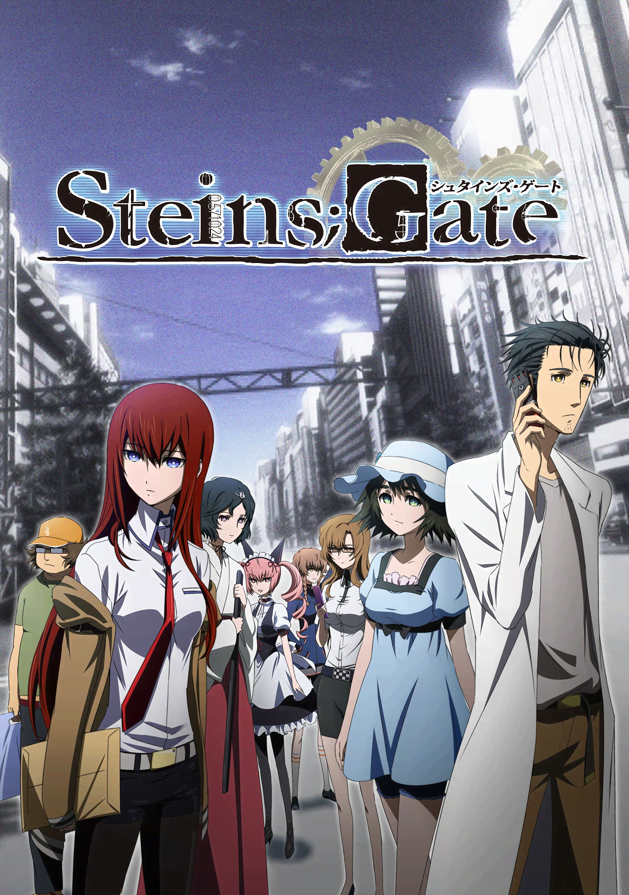

故事，从这里开始
秋叶原的一群年轻人偶然发现，自己制作的装置似乎能把讯息送往过去。一次次尝试让原本普通的社团活动变得难以预料。
为什么推荐
前段花时间建立人物和日常细节，之后这些细节会回到主线中。适合愿意耐心进入设定、关注因果选择的观众。
适合怎样的你
喜欢科幻设定、伙伴互动和层层推进叙事的观众。
观看前，知道这些
前几集节奏较慢，后段会涉及较强的心理压力和悲伤情节。
STORY 08 / 奇幻冒险
STEINS;GATE
一次实验，让日常和时间的方向一起改变。
想慢慢品味
A STORY FOR TONIGHT秋叶原的一群年轻人偶然发现，自己制作的装置似乎能把讯息送往过去。一次次尝试让原本普通的社团活动变得难以预料。
前段花时间建立人物和日常细节，之后这些细节会回到主线中。适合愿意耐心进入设定、关注因果选择的观众。
喜欢科幻设定、伙伴互动和层层推进叙事的观众。
前几集节奏较慢，后段会涉及较强的心理压力和悲伤情节。